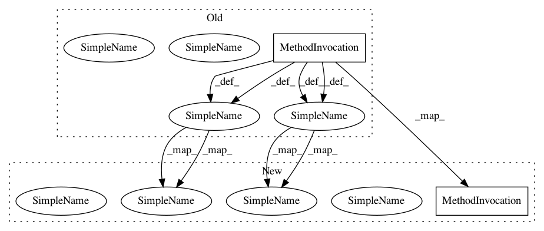

40a9ecc684d2c5e7fdfc09f46d0912940b74ab63,keras/datasets/boston_housing.py,,load_data,#,11
Before Change
path = get_file(path,
origin="https://s3.amazonaws.com/keras-datasets/boston_housing.npz",
file_hash="f553886a1f8d56431e820c5b82552d9d95cfcb96d1e678153f8839538947dff5")
f = np.load(path)
x = f["x"]
y = f["y"]
f.close()
np.random.seed(seed)
indices = np.arange(len(x))
np.random.shuffle(indices)
x = x[indices]
y = y[indices]
x_train = np.array(x[:int(len(x) * (1 - test_split))])
y_train = np.array(y[:int(len(x) * (1 - test_split))])
x_test = np.array(x[int(len(x) * (1 - test_split)):])
y_test = np.array(y[int(len(x) * (1 - test_split)):])
return (x_train, y_train), (x_test, y_test)
After Change
path = get_file(path,
origin="https://s3.amazonaws.com/keras-datasets/boston_housing.npz",
file_hash="f553886a1f8d56431e820c5b82552d9d95cfcb96d1e678153f8839538947dff5")
with np.load(path) as f:
x = f["x"]
y = f["y"]
np.random.seed(seed)
indices = np.arange(len(x))
np.random.shuffle(indices)
x = x[indices]
y = y[indices]
x_train = np.array(x[:int(len(x) * (1 - test_split))])
y_train = np.array(y[:int(len(x) * (1 - test_split))])
x_test = np.array(x[int(len(x) * (1 - test_split)):])
y_test = np.array(y[int(len(x) * (1 - test_split)):])
return (x_train, y_train), (x_test, y_test)
In pattern: SUPERPATTERN
Frequency: 1
Non-data size: 2
Instances
Project Name: keras-team/keras
Commit Name: 40a9ecc684d2c5e7fdfc09f46d0912940b74ab63
Time: 2018-09-15
Author: gabrieldemarmiesse@gmail.com
File Name: keras/datasets/boston_housing.py
Class Name:
Method Name: load_data